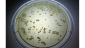

2023年
問題79 次の汚染物質とその濃度又は強さを表す単位の組合せとして，最も不適当なものはどれか．
（1）アセトアルデヒド μg/m3
（2）オゾン cfu/m3
（3）粉じん mg/m3
（4）硫黄酸化物 ppm
（5）アスベスト 本/L
2023年
問題79 正解（2） 頻出度AAA
オゾンの濃度の単位は，［ppm］，［mg/L］など．［cfu/m3］ は真菌や細菌など，培地で培養可能な浮遊バクテリアの濃度の単位である．
オゾンが主成分である光化学オキシダントの環境基準は，「1時間値が0.06ppm以下であること」．
「cfu」は，培地法の集落形成単位，colony forming unitの略である．培地法は，衝突法，フィルタ法などの捕集方法で，シャーレの培地上に採集した菌を培養，可視化して，その集落数を単位体積の空気中の菌数とする測定方法である（2023-79-1図参照）．この方法はロベルト・コッホの研究所で開発された．

出典 株式会社 衛生微生物研究センター
https://kabi.co.jp/how-to-count-microorganisms-2/
近年開発の進んだ培地を用いない迅速法は直接測定法と間接測定法に分けられる．間接測定法にはATP法，PCR法(核酸増幅法)がある．濃度は［個/mL］で得られる．
-(5) 浮遊アスベスト濃度の単位は他に，［本/cm3］，［繊維/mL］，［f/cm3］など．
アスベスト濃度の測定法は，空中のアスベストは繊維状粉じんの一種であるから，測定方法は基本的には一般粉じんと変わらない．ポンプで被験空気の粉じんをフィルタ上に捕集し，顕微鏡で計数する検鏡法と，被験空気に光を当てて散乱光を測る方法の2つがある．
ろ紙はグラスファイバではなくセルロースエステルの白色メンブレンフィルタを使用．最も一般的な検鏡法は，フィルタに試料を捕集した後，消光液でフィルタを透明化し，位相差顕微鏡により繊維の長さが5μm以上，かつ長さと幅の比が3：1以上の繊維状の物質を計数する（2023-79-2図参照）．光学顕微鏡では他に干渉位相差顕微鏡，電子顕微鏡では走査型，透過型が用いられる．
出典 三菱化工機アドバンス株式会社
https://www.kakoki.co.jp/mka/service/service04_1_5.html